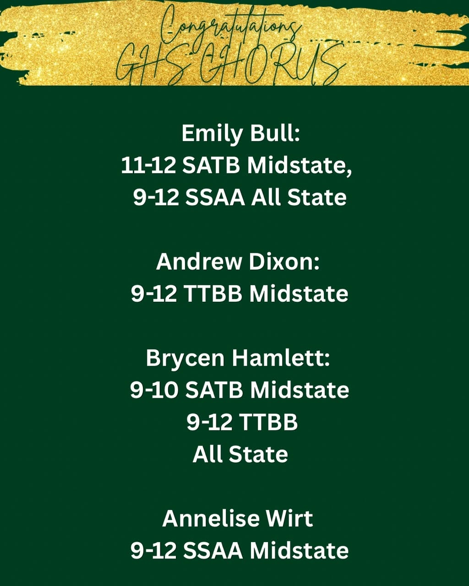

Four GHS singers earn Mid-State honors
Massive congratulations to Emily, Andrew, Brycen, and Annelise for representing the GHS Choir Program by making Mid-State. Another shout-out goes to Emily and Brycen for qualifying for All-State auditions. Hard work and talent truly pay off!
- Emily Bull
- 11-12 SATB Mid-State
9-12 SSAA All-State - Andrew Dixon
- 9-12 TTBB Mid-State
- Brycen Hamlett
- 9-10 SATB Mid-State
9-12 TTBB All-State - Annelise Wirt
- 9-12 SSAA Mid-State
Message from Mrs. Alexander